맛있고 몸에 좋은 가지덮밥 함께 만들어볼까요~~?
[주재료]
가지 2개, 양파 1개, 대파 1/3대, 쪽파 1대, 된장 1큰술, 간장 1+1/2큰술, 밥 1공기, 비정제 설탕 1큰술, 맛술 1큰술, 생강 가루 약간, 다진 마늘 1큰술, 들기름 1큰술, 후춧 가루 약간
가지덮밥을 n배로 맛있게! 가지덮밥 레시피
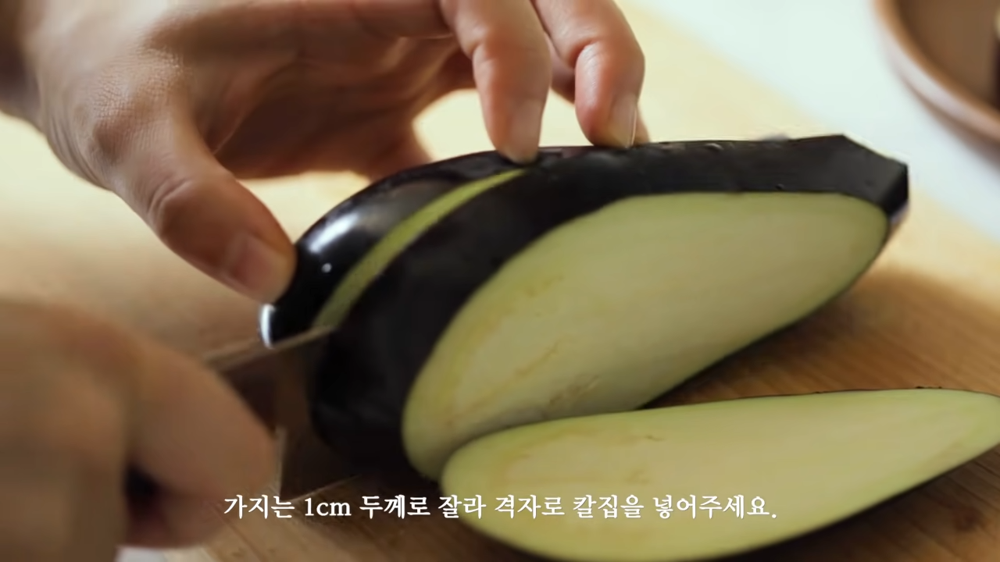1. 가지를 1cm두께로 잘라 격자로 칼집을 내주세요
2. 소금으로 밑간을 해주세요
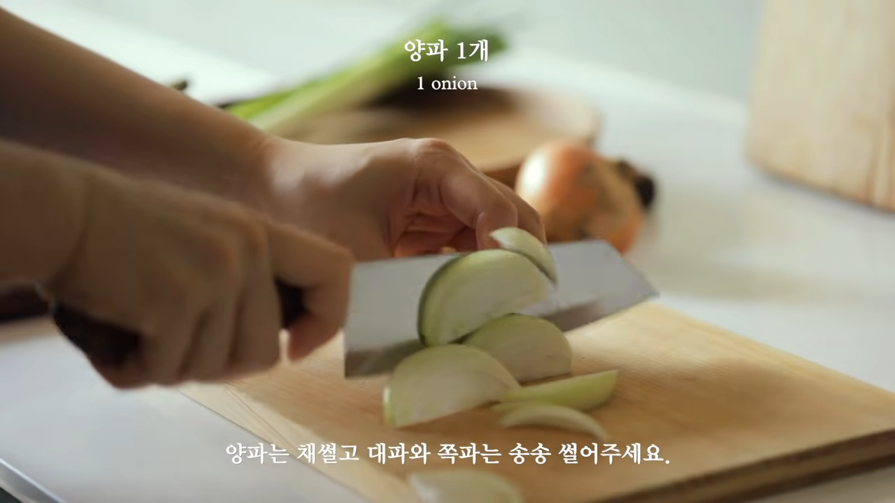 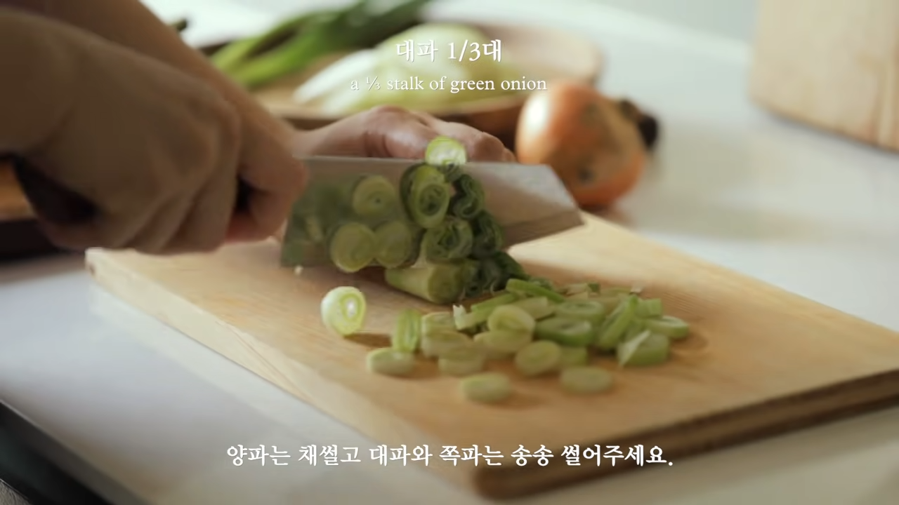 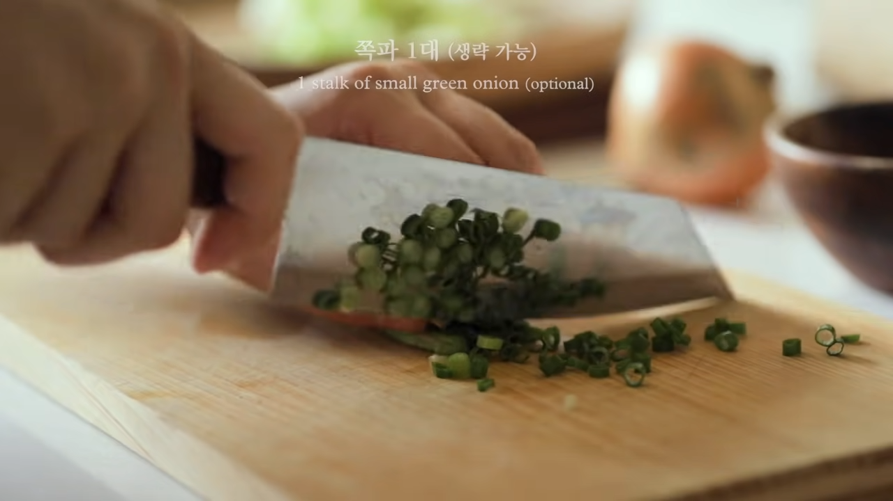3. 양파는 채썰고 대파와 쪽파는 송송 썰어주세요
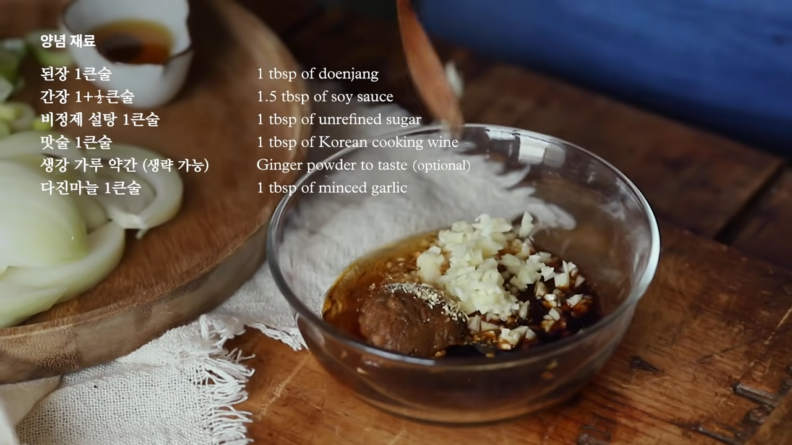4. 된장 1큰술, 간장 1+1/2큰술, 비정제 설탕 1큰술, 맛술 1큰술, 생강 가루 약간, 다진 마늘 1큰술, 들기름 1큰술, 후춧가루 약간을 섞어주세요
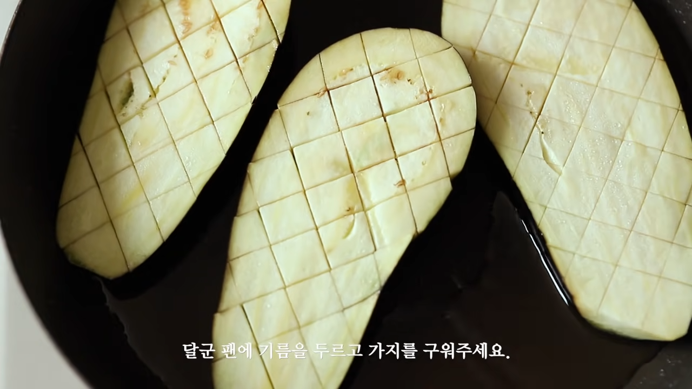 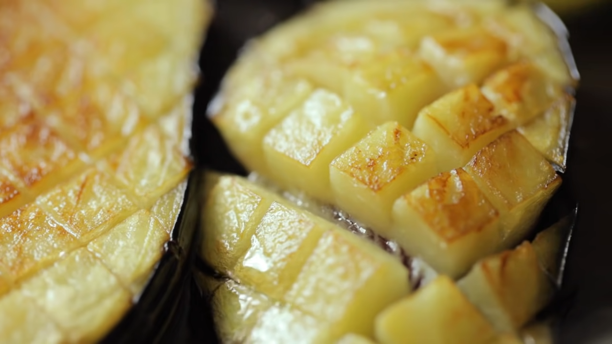5. 기름을 두른 후 가지를 구워주세요
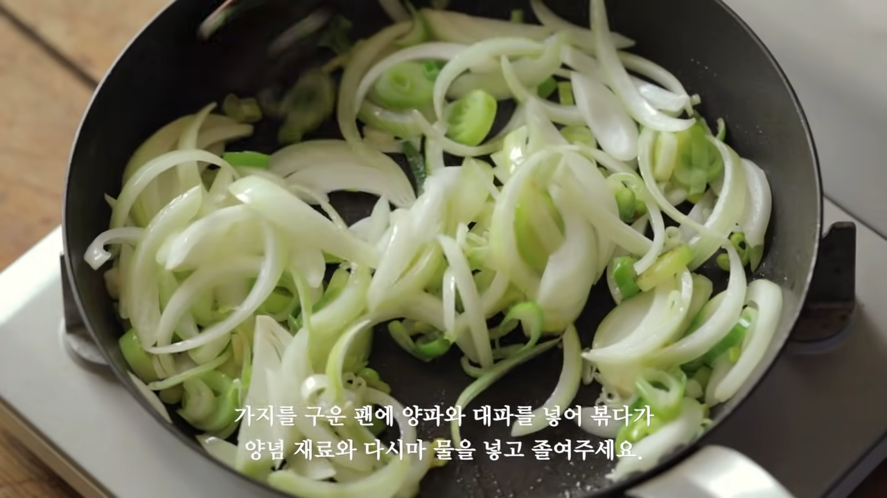 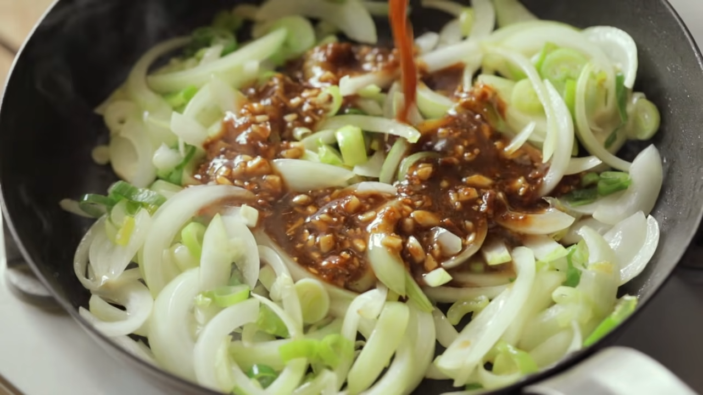 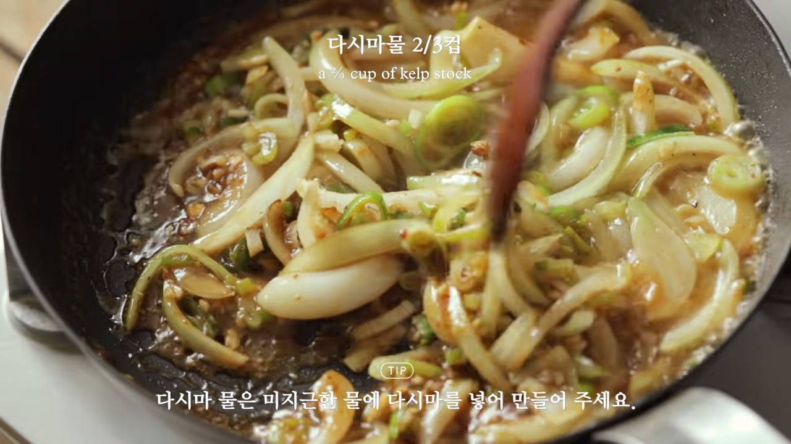6. 양파와 파를 볶고 만듬 양념을 부워주세요
7. 다시마 물을 넣어준 후 잘 볶아주세요
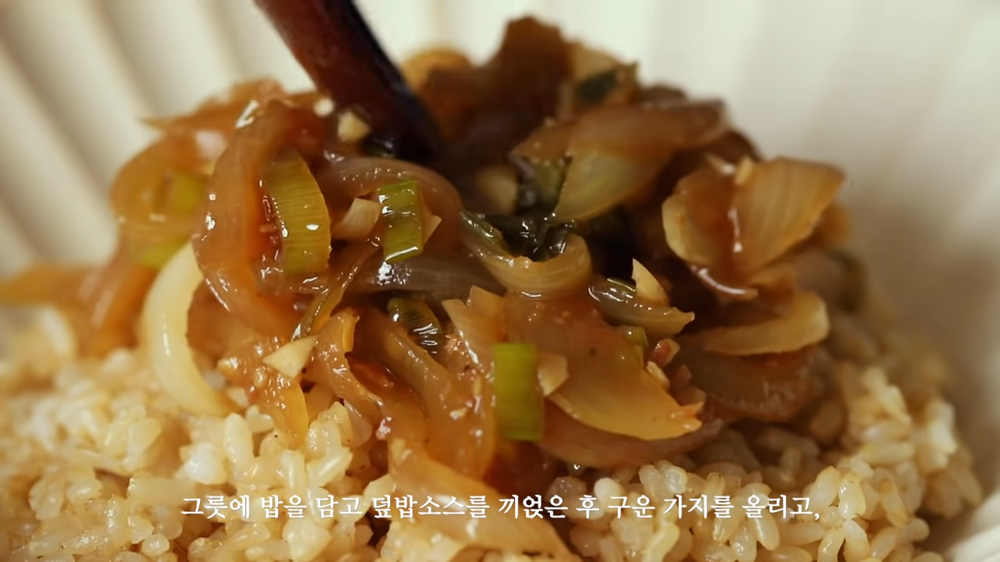 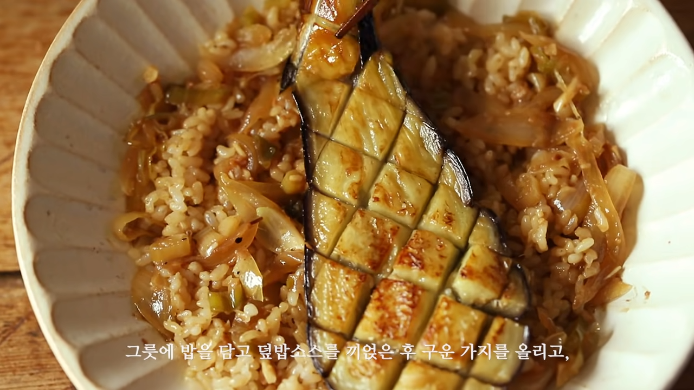 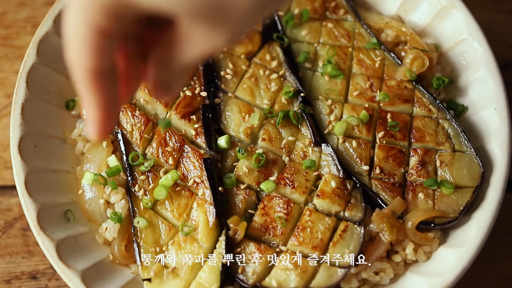8. 밥 위에 잘 볶아진 양념, 양파, 파를 놓습니다.
9. 그 위에 가지를 놓아줍니다.
10. 통깨와 쪽파를 뿌려줍니다.
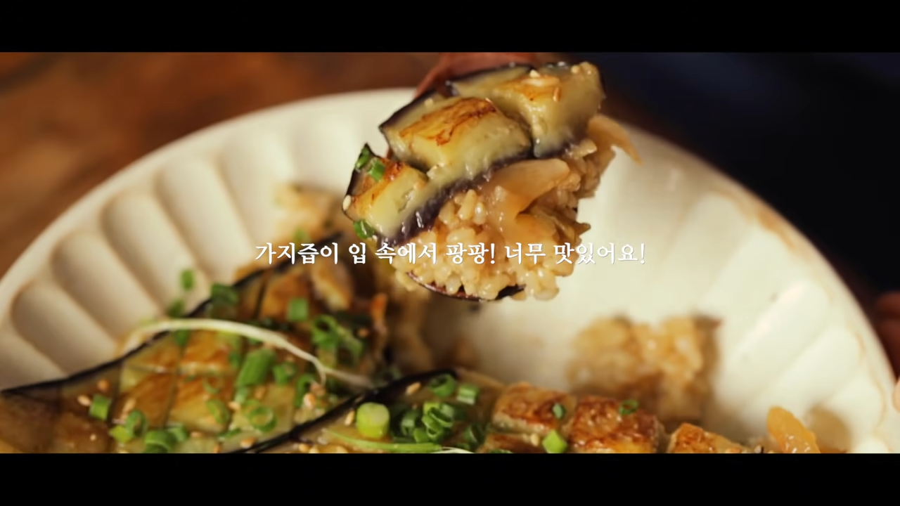11. 완성~
가지덮밥을 n배로 맛있게!
1. 가지를 1cm두께로 잘라 격자로 칼집을 내주세요
2. 소금으로 밑간을 해주세요
3. 양파는 채썰고 대파와 쪽파는 송송 썰어주세요
4. 된장 1큰술, 간장 1+1/2큰술, 비정제 설탕 1큰술, 맛술 1큰술, 생강 가루 약간, 다진 마늘 1큰술, 들기름 1큰술, 후춧가루 약간을 섞어주세요
5. 기름을 두른 후 가지를 구워주세요
6. 양파와 파를 볶고 만듬 양념을 부워주세요
7. 다시마 물을 넣어준 후 잘 볶아주세요
8. 밥 위에 잘 볶아진 양념, 양파, 파를 놓습니다.
9. 그 위에 가지를 놓아줍니다.
10. 통깨와 쪽파를 뿌려줍니다.
11. 완성~